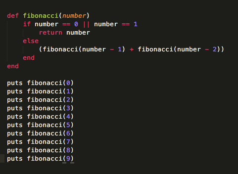
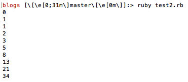
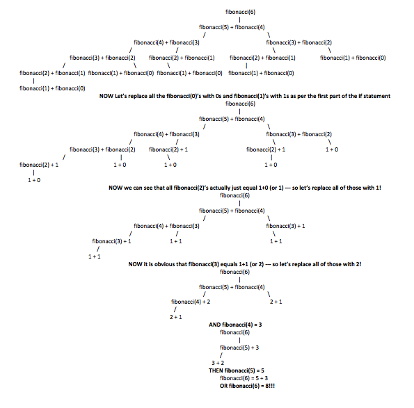

Dev Bootcamp Phase 0
Week 8 v2.0
March 7, 2016
Recursion!
For my next go-around at week 8 (see: surgery *sad*), I decided to tackle recursion. We've heard a lot about this concept recently (in that many challenges tell us to avoid recursion). I also remember *doing* a recursion challenge as a part of my DBC interview. So, given all this, I decided it might be a good time to actually learn more about what recursion is.
In its simplest terms (in the context of coding), recursion is the process by which you use a function or expression that calls itself as part of its operation. Okay, but what does that mean?
Best to use an example! After some googling, it looks like the most common example of recursion is used for expressing the fibonacci Sequence. The fibbonacci sequence is simply a series of numbers in math that starts with 0 and 1. Each subsequent term is equal to the sum of the two terms before it. So, after 0 and 1 in the sequence comes ... 1 again (because 0 + 1 = 1). Then the next number would be 2 (1+1) and so on. Thus the first ten digits of the series are: 0, 1, 1, 2, 3, 5, 8, 13, 21, and 34.
But how might we express this using recursion? Well below is one answer:
Now what is happening here though? Basically this method will print the term in the fibonacci sequence at the position you specify (note: just like with ruby indexing, the first position is represented with 0 and so on). The output looks like this (notice how these are the same first 10 terms I specified earlier!):
It can be a bit tricky visualizing how the method actually functions though. So let's parse through the code step by step:
- First we define a function (fibonacci) and give it a parameter (this case a number that represents the position in the sequence whose term we want printed to the console).
- Next we say, if the number is 0 or 1, just give us back that number.
- The tricky part: if the number is not 0 or 1 we want it to run the fibonacci method again on that number - 1 AND that number - 2 added together and return whatever this is.
Okay, so that's confusing, but let's think about it in concrete terms with a sample number. Let's use the number 6! Now we know the index 6 is actually the 7th term in our sequence (because our function, like indices, begins with 0 as the first term). Remember what our 7th term in the fibonacci sequence was? --> 0, 1, 1, 2, 3, 5, 8 --- so we are looking for 8! Now let's dig in:
- Our fibonacci method takes 6 --> and it isn't 1 or 0 so we jump into the else statement within the function
- Now we need to return fibonacci (6 - 1) + fibonacci (6 - 2) OR fibonacci (5) + fibonacci (4) --> but this means we now have to start over with 5 in our fibonacci function and 4 in our fibonacci function
- And so on ...
Here is a diagram showing how all this ends up working out:
See ... not too bad? Okay, maybe it is. The most challenging part of writing recursions is dealing with all the layering (visualized by my diagram above). I find it to be really helpful if, when you know you might need to do a recursion, to start with the practical applications. So, if I were tackling this problem over again, I would say, I want to put in 6 and get out 8 and this is what would need to happen in between. Hopefully, I'd notice the pattern of taking the fibonacci sequence position just 1 or 2 less than the position I'm at and be able to turn it into a recursion. Drawing it helps (or at least helps me).
I have a feeling recursions are a big part of method / function defining in coding languages. Hopefully practice will be what makes perfect!